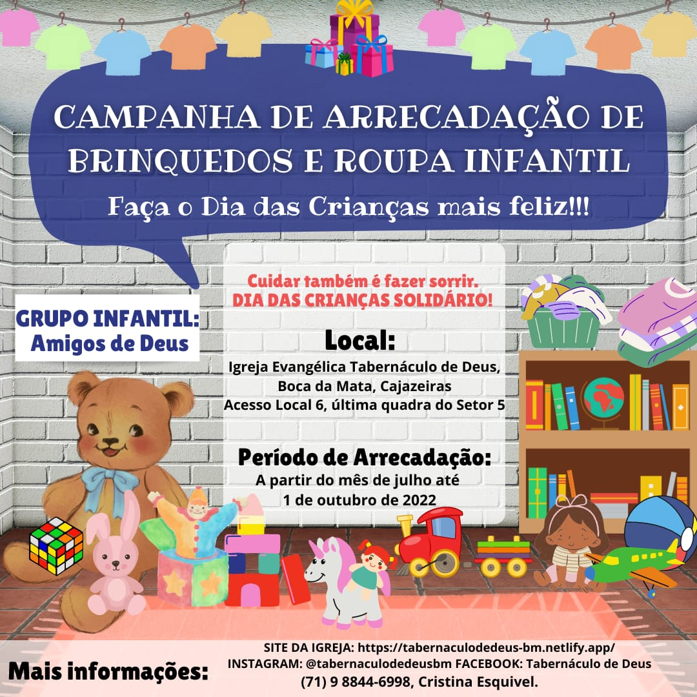

Campanha de Arrecadação de Brinquedos e Roupa Infantil para o Dia das Crianças
Oi, pessoal. Somos do Grupo Infantil da Igreja Evangélica Tabernáculo de Deus, Boca da Mata, Cajazeiras e estamos realizando uma Campanha de Arrecadação de Brinquedos e Roupa Infantil. Faça o Dia das Crianças mais feliz!!
É um projeto de evangelismo solidário com a participação das crianças do Grupo Infantil da nossa Igreja.
Estamos arrecadando esses materiais (em bom estado de uso ou novos). Você tem algum desse tipo ou conhece alguém que possa contribuir conosco nesse projeto? Se sim, compartilhe com a gente! Seu apoio é fundamental!
Estaremos arrecadando nos meses de julho, agosto, setembro até a primeira semana de outubro e a distribuição ocorrerá na semana do Dia Das Crianças! Contamos com seu apoio e participação.
Compartilhe doando ou divulgando essa campanha.
Deus abençoe a todos!